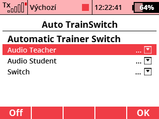
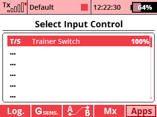

Aplikace slouží pro uživatele využívající režim učitel/žák. Umožňuje přehrát zvukový soubor pro indikaci předání řízení modelu učiteli/žákovi. Předání řízení učiteli se děje automaticky, když dojde k pohybu křížových ovladačů (pák) vysílače. Učitel tak získá okamžitou kontrolu nad modelem.
V menu zvolte položku Aplikace - Uživatelské aplikace. Stisknutím klávsy F(3) otevřete dialog pro výběr aplikací. Zde vyberte soubor "TrainSw".
Otevřete konfiguraci aplikace. Zde zvolte zvukové soubory a přepínač:

Zdrojové kódy můžete stáhnout z oficiálního repozitáře JETImodel Lua-Apps GitHub.